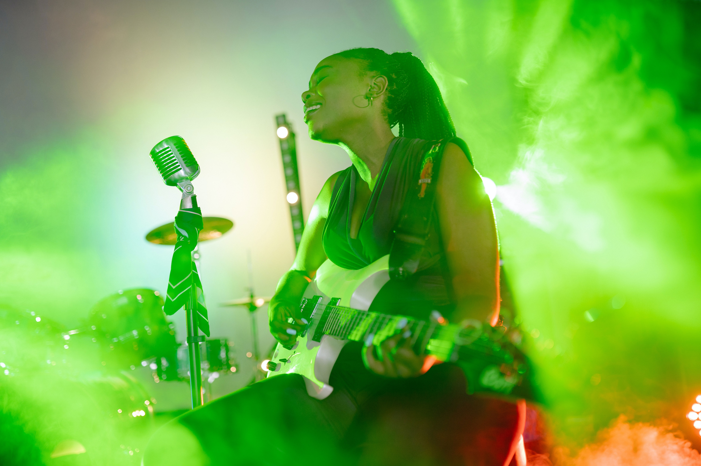
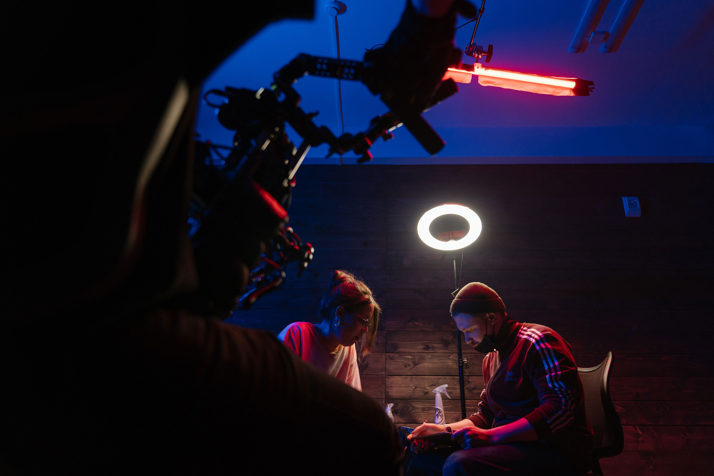

Un poco de mi...
Soy un fotógrafo y editor de video con más de 8 años de experiencia en la industria. Me especializo en la fotografía de bodas, retratos, eventos y paisajes, así como en la edición de video para proyectos publicitarios y personales. Me apasiona capturar los momentos únicos y contar historias a través de mis imágenes.
Fotogafía artística
Fotografía de la banda la Quinta Domensión en el centro Cultural Malamnbo ubicado en Palermo. También colaboré con el arte de tapa de disco de la banda y en la estética de sus videos.
Corto fotográfico
Hice la fotogralia de corto ¨La noche de las musas¨ del director Carlos Ortega, el rodaje fue en interior y exterior y se Trabaó se presentó en el festival Bafici 2017.
Fotografía de moda

Trabajo como fotografo de moda ya sea para publicidad como eventos. En este caso trabajé con la modelo Natalia Alvarez y su producción de moda para la marca Complot.
Fotografía social
Me gusta tarbajar al aire libre, trabajé en la producción fotográfica de la profesora de YoGa Vanina Braconi quien es muy conocida por sus talleres con bienestar y conciencia.
Fotografía redes

Trabajo para redes sociales en la creación y contenido para reels y emprendedores, los ayudo en la producción y postproducción de videos.
Fotografía de bodas

Trabajo eneventos sociales coo bodas, casamientos, despedidas de solteros, cumpleaños, y todo tipo de reunión social, en este caso es una boda en estancias de Pilar.